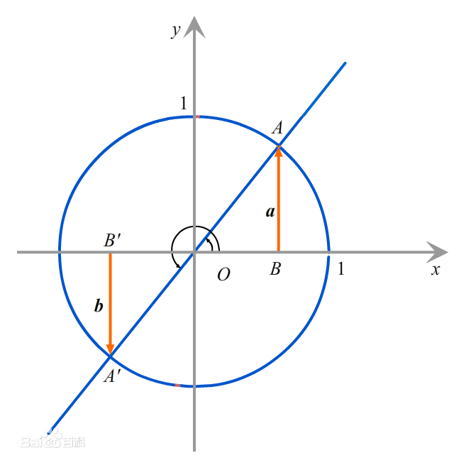
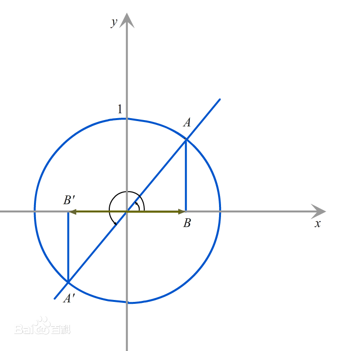
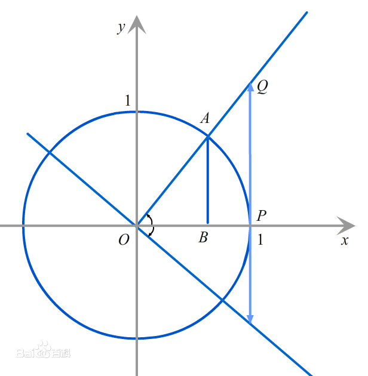
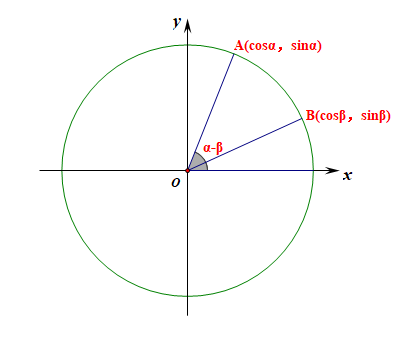

三角函数
同角三角函数关系
-
角的定义：平面内一条射线绕着顶点从一个位置旋转到另一个位置所形成的图形。
-
角的分类：
-
按旋转方向分为正角、负角和零角。
-
按终边位置分为象限角和轴线角。
-
-
终边相同的角：所有与角 终边相同的角，构成的角的集合是 .
任意角的三角函数
对于任意点 ，其与坐标轴原点 组成的角 的三角函数：
记 ，
在单位圆中，，那么：
三角函数线
在单位圆中，对于一个角，其三角函数可以表示为若干向量线段。
-
正弦线：

过点 做关于 轴的垂线，垂足为 ，，称 为正弦线。 -
余弦线：

过点 做关于 轴的垂线，垂足为 ，，称 为余弦线。 -
正切线：

延长 交直线 于点 ，，，称 为正切线。
三角函数线常常可以用来比较三角函数的相对大小。
诱导公式
基础内容，不再赘述。
三角恒等变换
和差角公式
一切变换的基础。
利用
证明方法有很多，复数法、两点间距离公式法、余弦定理、向量法，具体可以看静雅斋数学的相关文章（现在似乎不开放了），这里给出较为简单的向量法证明。

仅考虑对于 与 都是锐角的情况。
证毕。
二倍角公式与降幂公式
非常常用的公式，需要背诵。
万能公式
也比较常用的公式。
辅助角公式
非常常用的公式。
辅助角公式的实质，就是通过配凑，构造出 ，满足 ，然后使用
和差化积与积化和差
理论上是非高考考点，但作为三角恒等变换的有力工具，和差化积、积化和差可以灵活地在和与积两种形式间转换，可以用来解决很多问题。
证明都可以通过和差角公式化简证明，背诵这些公式的主要目的是加速计算。
三倍角公式
三倍角正弦公式： 三倍角余弦公式： 三倍角正切公式：
还有另一种形式。
的乘法三倍角公式： 的乘法三倍角公式： 的乘法三倍角公式：
高考范围内一般较少考察，也可以现场推导。乘法形式可能需要有识别的能力。
背诵内容
用 表示 .
用 表示
用 表示
用 表示
辅助角公式，有关 的信息？
和差化积，？
和差化积，？
和差化积，？
和差化积，？
积化和差，？
积化和差，？
积化和差，？
积化和差，？
三倍角正弦公式？
三倍角余弦公式？
三倍角正切公式？
用 表示
用 表示
用 表示
同步
的乘法三倍角公式？
的乘法三倍角公式？